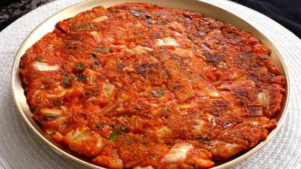

Sourdough Pancakes
Description
The trick to making sourdough pancakes simple is to have a recipe that can be mixed and cooked within minutes. This recipe uses fully fermented sourdough starter straight from the refrigerator. Adding in real butter, eggs, milk, and sugar will result in an easy batter with all the nourishment of real traditional food!
Stop throwing away sourdough discard and start making these amazing pancakes for breakfast whenever you've accumulated enough of it!
Ingredients
- 500 gr (2 cups) sourdough starter discard, 100% hydration, stirred down
- 3 eggs
- 50 gr (1/4 cup) sugar
- 100 gr (about 1/3 cup) milk (use half for thicker pancakes)
- 6 gr (1 tsp) salt
- 113 gr (1/2 cup) butter, melted
Steps
- Cut the potatoes into half-inch sized cubes
- Cook the potatoes in a microwave-safe bowl covered with plastic wrap for about 7 minutes, until soft
- Mash the potatoes, add the water and starch, then mix until uniform
- Shape the noodles by rolling a small ball and indenting it with a glass bottle
- Add the noodles to boiling water and cook on medium heat for 5 minutes (or longer if you want a softer mouthfeel)
- Strain the noodles into iced water (or just water for softer buttons)
- Remove the noodles into a serving bowl, throw on all of the ingredients for the seasoning except for the oil
- Heat the oil in a pan until really hot, pour it over the seasoning, then mix